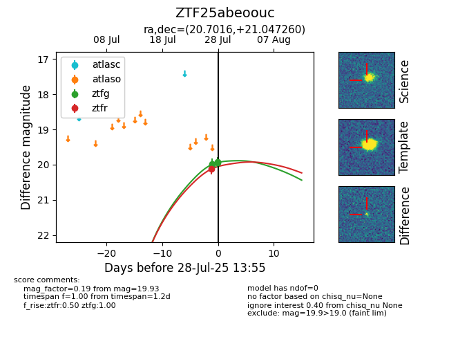

Target ZTF25abeoouc at 2025-07-28 13:55, see:
FINK: fink-portal.org/ZTF25abeoouc
Lasair: lasair-ztf.lsst.ac.uk/objects/ZTF25abeoouc
ALeRCE: alerce.online/object/ZTF25abeoouc
alt names
ZTF25abeoouc (ztf,fink)
coordinates:
equatorial (ra, dec) = (20.7016,+21.04726)
galactic (l, b) = (132.6803,-41.22997)
photometry
last ztfg=19.93, ztfr=20.12
4 ztfg, 1 ztfr detections
